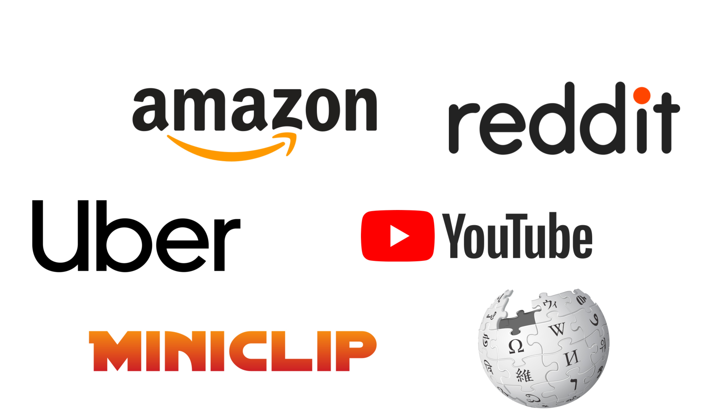
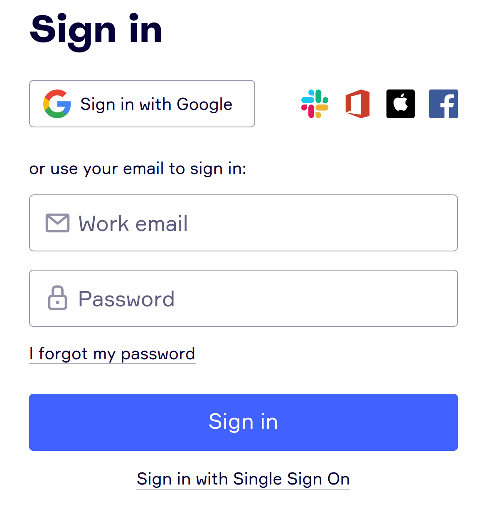
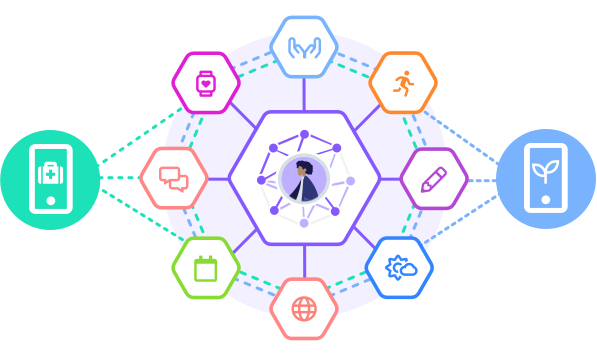
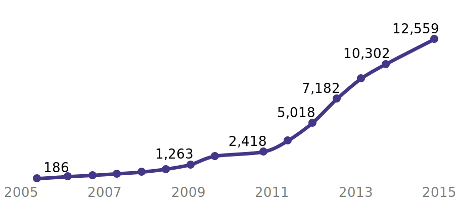
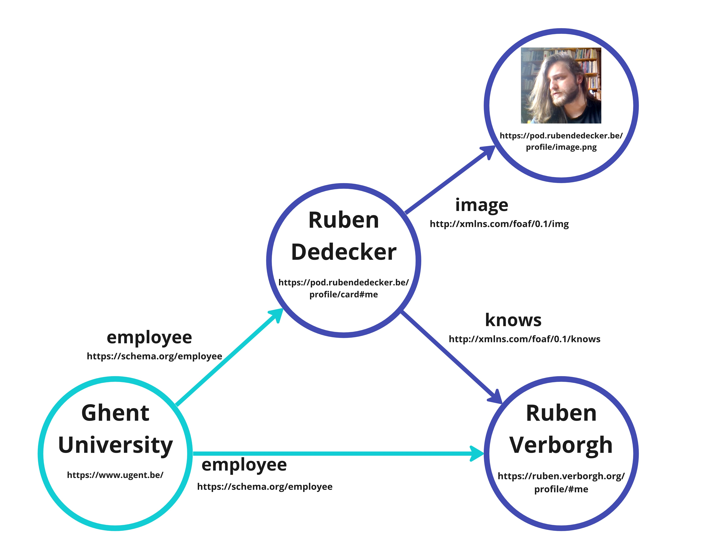

![[Tim Berners-Lee’s original proposal for what would become the Web]](images/vague-but-exciting.jpg)
Before the Web
-
Exchanging information was hard
- different hardware
- different software
-
Innovation was hard
- For which machines do we build?
- For which operating systems do we build?
The Web strives to be universal
-
Anyone can use the Web, regardless of:
- hardware
- desktop
- phone
- tablet
- watch
- …
- software
- operating system
- browser
- app
- …
-
Anyone is free to innovate
- Build for the Web
- Standards provide interoperability
Individual links are allowed to break
so the entire Web does not
Tim Berners-Lee
The Web brings permissionless innovation
at a global scale
-
Anyone can build anything for any reason
-
The technologies are open
-
You don’t need anyone’s permission
to join the Web and launch a new idea
The Web brings freedom of expression
to everyone across the world
-
Anyone can say anything about anything
-
We can link to opinions of others
to discuss about them
-
The “Web 2.0” ideas transition users
from consumers to prosumers
The Web enabled unprecedented creativity

The browser wars

best viewed with
, back from never gone


Our data has become centralized
in a handful of Web platforms
-
People’s former personal blogs
are now on Facebook and Twitter
- great user experience
- but we lost control
-
People lose (control of) their data
-
The Web’s universality is visibly threatened
Sign in with Facebook to see this content
-
Twitter is better on the app
-
Ironically, permissionless innovation
even allows platforms that prevent it.
The Facebook founder has no intention of
allowing anyone to build anything on his platform
that does not have his express approval.
Having profited mightily from the Web’s openness,
he has kicked away the ladder that elevated him
to his current eminence.
John Naughton, The Guardian
![[photo of a ladder]](images/ladder.jpg) © Vinayak Shankar Rao
© Vinayak Shankar Rao
Within the walled gardens on the Web,
you have to move either data or people
 © David Simonds
© David Simonds
decentralization is about choice
-
we will choose where we store our data
-
who we give access to which parts of that data
-
which services we want on top of it
-
and how we pay for those
My POD as the source for my data
- I can store and link anything I want
-
You can keep up to date
-
You can poll me for my data
-
I can push you my updates
-
You can aggregate from multiple sources
-
Aggregation provides scalability where needed
-
Aggregation can keep up to date with its sources
Foster choice and innovation on the Web
by separating data from apps

© solidproject
Choose the data you trust
-
Track provenance of data
-
you can keep track of the source of data
-
you can ignore data of which you do not trust the source
-
Verify data to ensure authenticity
-
Do not only provide data, provide verification
-
Signatures provide trust in provenance
Why restrict ourselves to one source?

A data pod can contain any data
you create or need online
- profile 👤
- media 🖼
- comments 🗣
- likes 👍
- … ✨
Any app you can envision,
you can build with Solid
- calendar 📅
- social feed 👥
- photo sharing 📸
- conference organization system 🎤
- … ✨
Our data needs to scale to the Web!

How many Web interfaces
are you willing to integrate?
number of Web APIs
indexed in ProgrammableWeb

Linked Data

I want to like a blog!
On Facebook?
On Twitter?
On Tumblr?
On the Web!
If I like your blog, I need a way
to connect my like to your blog.
{
"@context": "https://www.w3.org/ns/activitystreams",
"id": "#ruben-likes-blog",
"type": "Like",
"actor": "https://rubendedecker.be/profile/#me",
"object": "https://ruben.verborgh.org/blog/",
"published": "2019-04-25T08:00:00Z"
}
My like needs a univeral meaning
so different apps can reuse it
{
"@context": "https://www.w3.org/ns/activitystreams",
"id": "#ruben-likes-blog",
"type": "Like",
"actor": "https://rubendedecker.be/profile/#me",
"object": "https://ruben.verborgh.org/blog/",
"published": "2019-04-25T08:00:00Z"
}
Data from different sources
must easily be combined.
{ "@context": "https://www.w3.org/ns/activitystreams",
"@graph": [{
"type": "Like",
"actor": "https://rubendedecker.be/profile/#me",
"object": "https://ruben.verborgh.org/blog/",
"published": "2023-01-22T08:00:00Z"
},{
"type": "Like",
"actor": "https://example.org/people/patrick#me",
"object": "https://www.w3.org/DesignIssues/",
"published": "2022-04-25T08:05:00Z"
}]
}
Isn't Linked Data too complicated?
-
We can abstract it for the developer
-
We can build interfaces that are familiar
-
We can make it invisible for the user
-
Do you know how your data is stored by Google?
Take advantage
of the Web!
I can fill my CV from my pod
I can host my presentations on my pod
I can follow my nose
Next time you visit a Website,
think how could I improve this
by connecting it to my data POD?


![[Release of the WWW software]](images/www-release.jpg)
![[A list of Google products.]](images/google-products.png)
![[Image of twitter and mastodon logos]](./images/twitter-mastodon.webp)
![[The POD as the source of your data]](images/store-anything-tour.svg)

![[A billboard advert for Facebook’s Free Basics initiative in Mumbai.]](images/facebook-india.jpg)
![[The facebook metaverse website (screenshot)]](images/metaverse2.png)